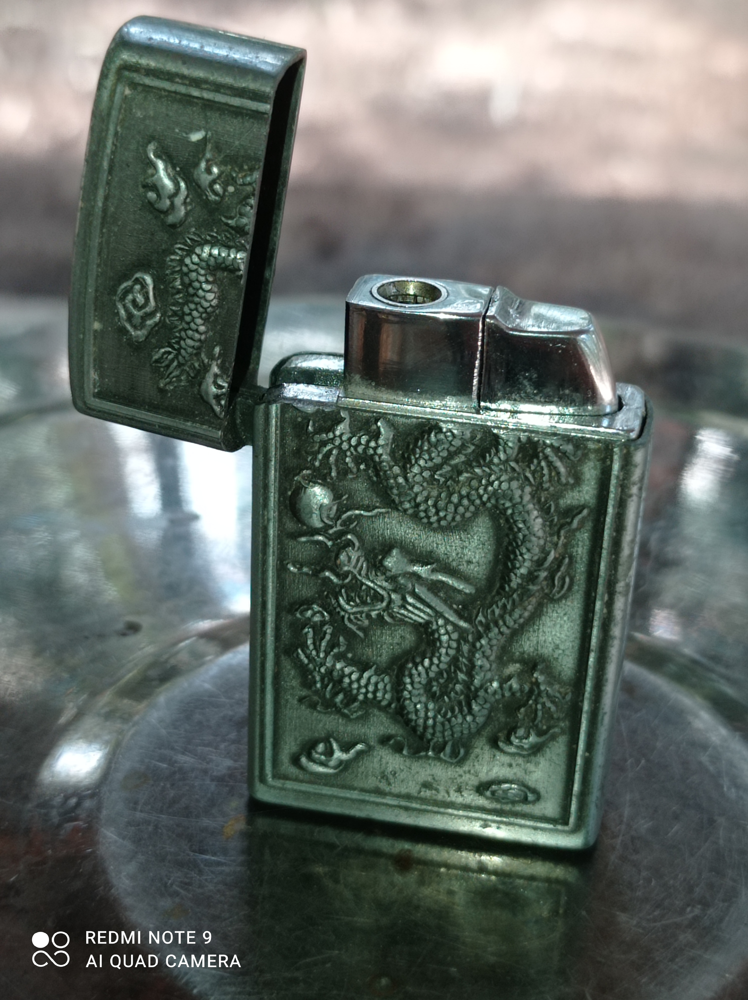
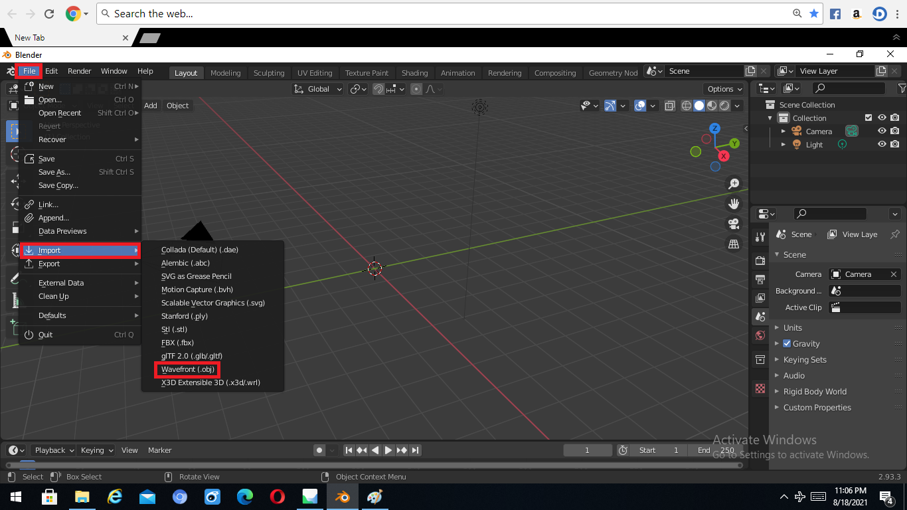
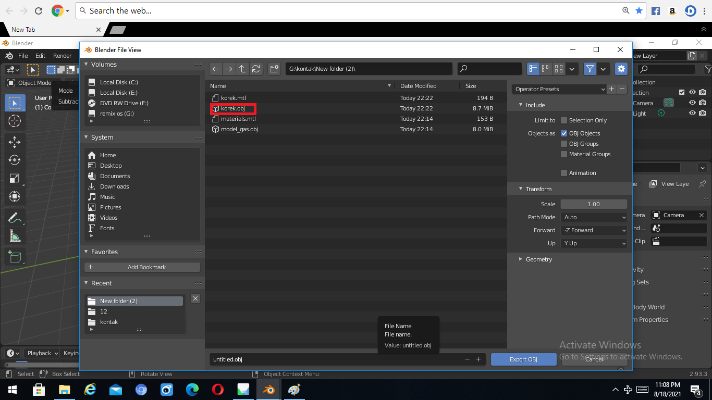
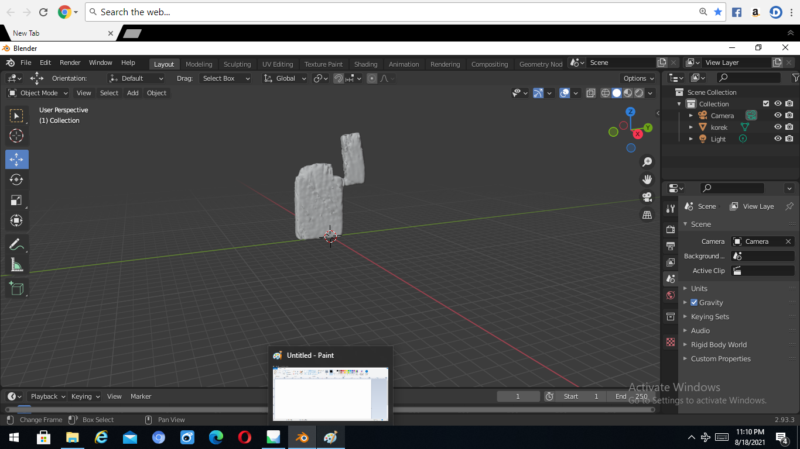
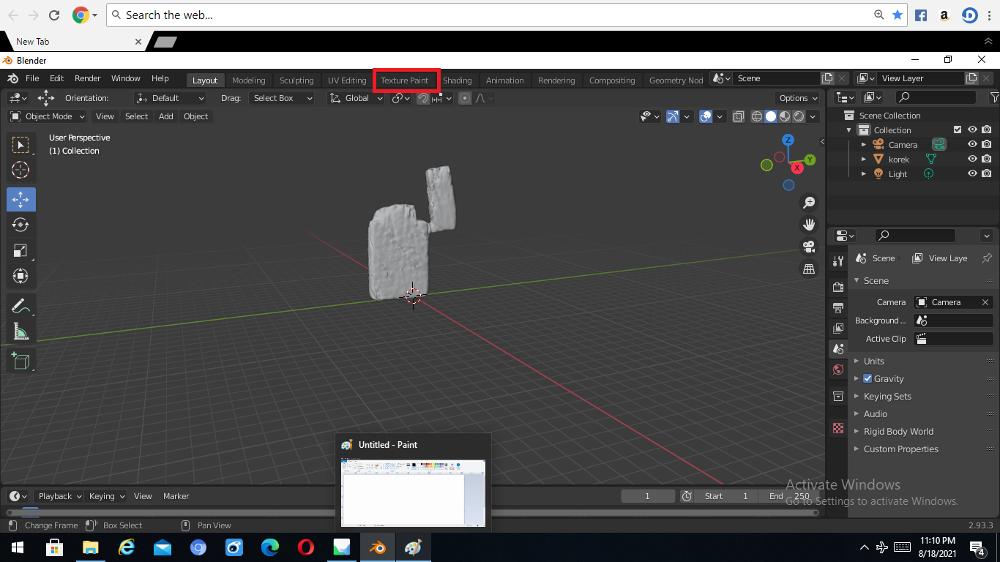
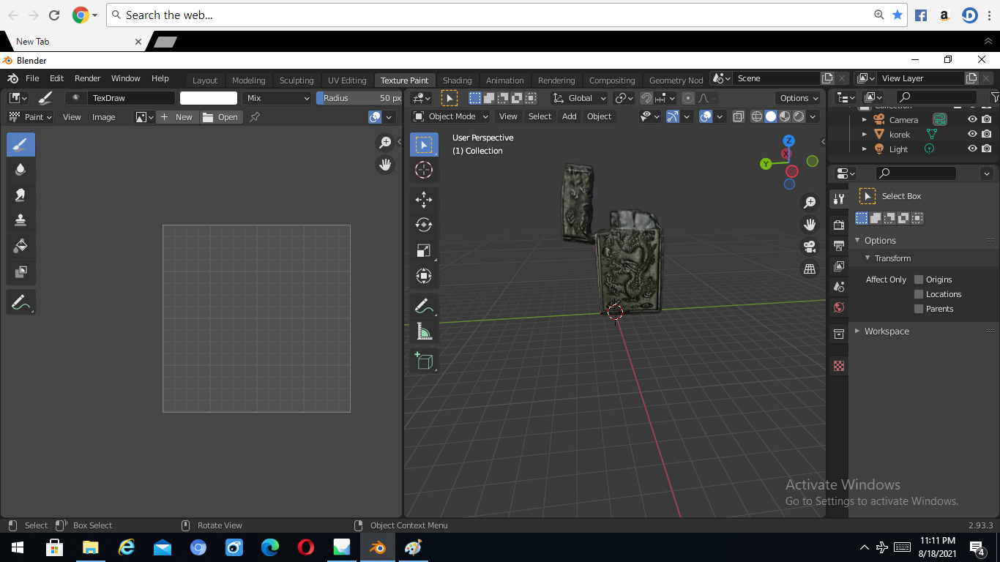
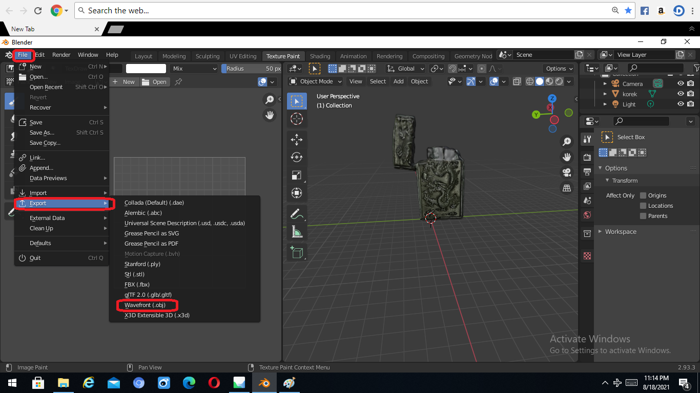
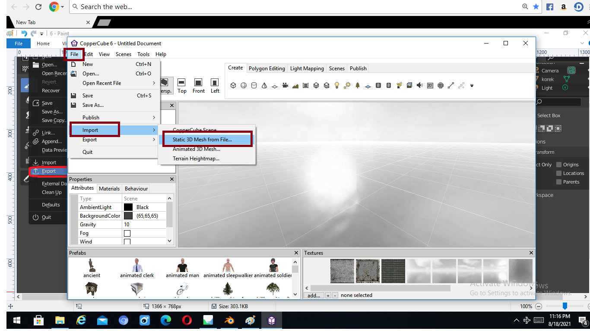
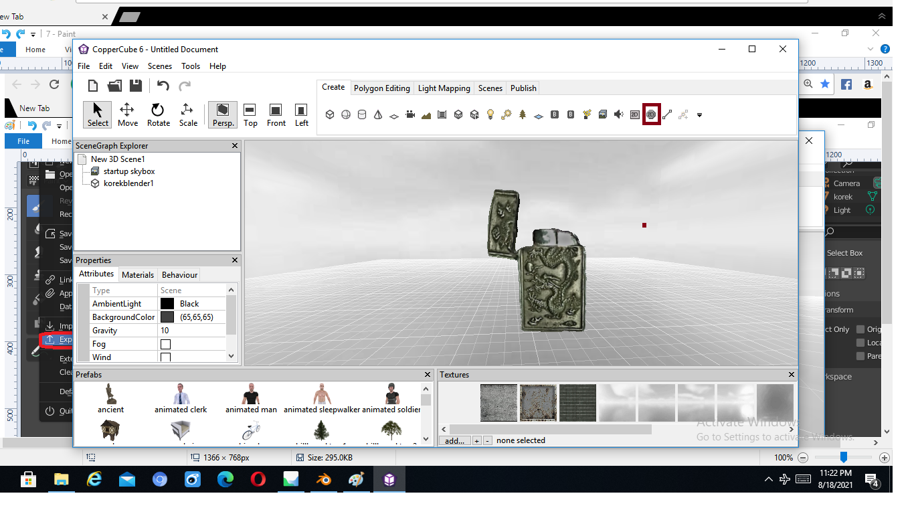
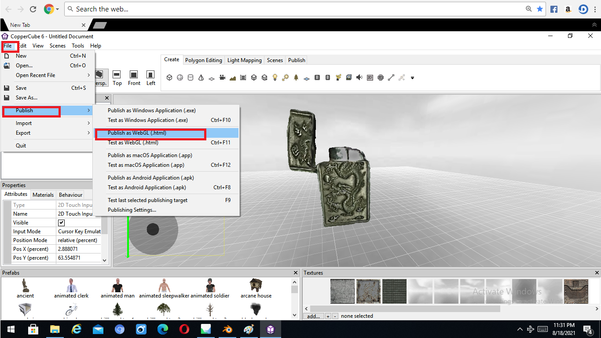

Nama : Agung Rizki Setiawan
Npm : 19312180
Keterangan : Tugas Photogrammetry

Jadi kali ini saya akan membuat Photogrammetry di suatu objek yaitu korek api.
Aplikasi untuk mengelolanya saya menggunakan Displayl.land di ios (untuk mengelola gambar dan tekstur), Blender (Untuk menyatukan obj dan mtl ke dalam bentuk 3D), dan saya juga menggunakan CopperCube6 (untuk meneyempurnakan project dan Mempublish Dalam bentuk html)
Setelah saya menegelola gambar di Display.land untuk mendapatkan obj dan text, selanjutnya saya olah keduanya ke Blender dengan tujuan untuk menyatukan obj dan text
Langkah-Langkah Di Belnder
1.Pilih File, Impor, dan Pilih Format obj untuk memasukan objek.



2. Setelah mucul objeknya kita kita akan memberi tekstur dengan cara pilih Texture Pain

5. Sekarang objek sudah ada teksturenya dan kita akan Export ke dalam bentuk .obj

Tahap Selanjutnya yaitu pengolahan di CopperCube
1. Pilih File, Import, dan Static 3D Mesh

2. Untuk Memudahkah kita beri Analog (2D Touch)

3. Yang terahir publish dalam bentuk .html
